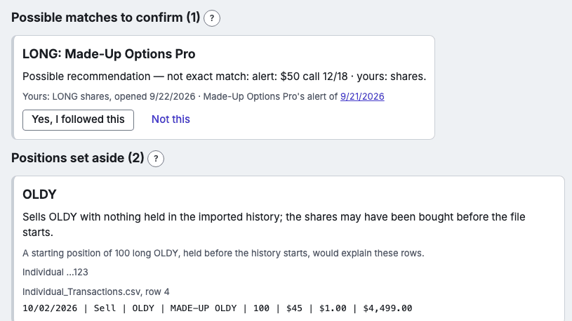

Review
Review lists what AlertKeeper wasn't sure of. Nothing there is guessed: each item shows the rows or letter involved and says what you can do.

- Possible matches to confirm
- A trade that looks like it followed a service's rec, but not exactly (another strike, a few days later). Say whether you followed it; until then it isn't counted for the service.
- Positions set aside
- A position AlertKeeper couldn't work out from your history -- often something bought before the history begins. Import more history, or a positions file, or enter a starting position.
- Rows AlertKeeper couldn't read
- A row of a broker file with an action word it doesn't know, or a cell that doesn't read. Kept exactly as written; it says why.
- Differences with your broker's files
- Where your positions file or realized gain/loss file disagrees with what AlertKeeper worked out, with both numbers side by side.
- Manual fills your broker file doesn't show
- A trade you entered manually, still unmatched after a later broker file: check it, or delete it.
- Mail from a sender AlertKeeper doesn't know
- Three choices: put it with a service -- one in the list (its letters are read as that service's), or A new service…, which asks for the new service's name (and its publisher, if you know it) and makes it: the sender is then known and its letters are kept under that service, though AlertKeeper can't read their recs until a pack for it comes with an update; Not a letter — skip just this one (this email only: the address stays unknown, and its next letter asks again); or Ignore everything from this address, now and later (its mail is filed quietly; Settings → Mailbox → Ignored senders lists it, with Stop ignoring to bring its letters back here). Google's own mail and your services' marketing mail never land here.
- From an address you ignored, but it looks like a letter
- The safety net: mail from an ignored address that a service's pack reads as a letter with recs is never filed quietly. It waits here, nothing counted, with the same choices: put it with the service, skip just this one, or keep ignoring the address.
- Letters AlertKeeper recognised but couldn't read
- A service's letter whose layout has changed: kept as received, nothing read from it, until its pack is updated.
- Closes of a service's rec not scored
- No price for the service's exit day (often an evening the computer was off). Nothing to do: it's counted with its realized P/L and never estimated.